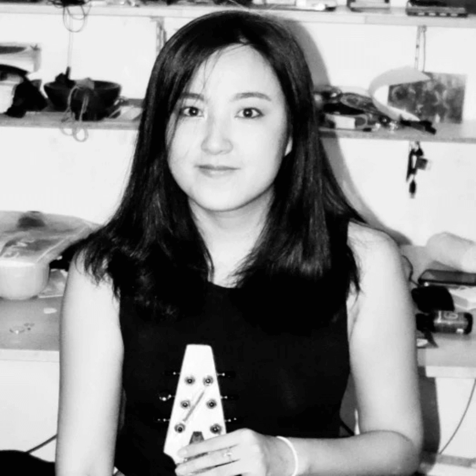

In September the Game Arts International Assembly will host an online edition on Tuesday 10th and Thursday 19th September. This time GAIA will host 8 tracks distributed in 2 days with over 20 curators, community organizers and cultura producers from 12 countries from around the world. We will cover a wide range of topics such as online curation and community caring to innovative editorial approaches. In
addition to talks sharing personal experiences, playful workshops, and practical sessions, GAIA will include an online artgames showcase. The sessions will be hosted in a private zoom session, those interested in attending have to sign up filling this form.
GAIA 2024 Participants

Allison JingYang
üá®üá≥ Hong Kong, China
Yang Jing (Allison) is a producer and storyteller currently based in Hong Kong. You can
usually find her designing a game or game experience, curating a game-related exhibition, writing research and media pieces on
game and gaming (particularly in the sinophone context), teaching game courses in universities.
cAT uses game design, performance, and expanded reality to explore the dynamic relationship of work and play. Graduating in 2018 with her MFA in Design for Emerging Technologies from the School of the Art Institute of Chicago, she is interested in discussing technology's impact on social and working relations, with a focus on precarious, feminized, and domestic labour. Her work has been exhibited internationally at venues such as the 2018 Venice Architecture Biennale, Kunsternes Hus (Norway), and the Museum of Contemporary Art (Chicago). She currently lives and works in Treaty 4 territory..
Chaz Evans
üá∫üá∏ United States
Jooyoung is Assistant Professor of Media Art at the University of South Carolina as well as
Co-Founder of VGA Gallery. Evans is an artist, educator, writer, and curator. His work deals with the connections between video
game art, 3D animation, software production, and the art historical past as well as the tensions between global technological
powers and local media cultures
David Antognoli
üá∫üá∏ United States
game art project(s): DELETE
a game they made: DELETE
cultural affiliations: DELETE
David David Antognoli (he/him) is the Director at Night City, a Chicago studio focused on community-based game development, exhibitions, and educational resources. In addition, he is an Assistant Professor of Game Design in Columbia College Chicago where his creative and scholarly agenda emphasizes game experiences in community contexts. A game industry veteran with experience in both programming and design roles, David has worked on projects with companies like Microsoft, Sega, 2K Games, and Nickelodeon. Now he finds creative refuge in independent game development and helping others build, share, and experience amazing games.
Dominique is the managing director at Free Lives by day, festival director for Playtopia by night. She has been in events for more than 15 years before moving to the games industry so when Free Lives wanted to start Playtopia, it was a major bonus they knew someone who could do it. Dominique and 3 friends whom she has done events together with in the past also work in games now (some at Free Lives) and so they have all come together to work on Playtopia as their passion for games and events are now combined! and the team as grown by A LOT!.
Emily Koonce
üá∫üá∏ United States
cultural affiliations: DELETE
Emily Emily Koonce (she/her) is a multi-media artist, writer, and community organizer interested in the intersection of folk games, philosophy, and education. She has worked as an adjunct professor at the NYU Game Center, as the program director of the National Student Leadership Conference's game design high school program, and as a Meow at Babycastles in NYC. She is currently based in Chicago where she can be found turning movies into drinking games and giving riddles to strangers at parties. Her videogame crockpot about being bored in the suburbs released earlier this year.
Gonzalo Borzino
üá¶üá∑ Argentina
game art project(s): Accion Dev
a game they made: DELETE
Gonzalo isa professional Game Designer, a game jam enthusiast, a university teacher of video game production and part of the Red de Comunidades de Desarrollo de Videojuegos. Gonzalo co-founded AcciónDev, a community that promotes development around themes of social, ecological, reflexive and identity interest, from Latin American vision. Acciondev has participated in the creation of various gamejams, learning spaces and gaming articles.
Hexe Fey is an interdisciplinary games maker, curator, dancer, nerd, transsexual. Oglala Lakota and European.
Jamin Warren (from Out of Index)
üá∞üá∑ United States
Jamin Jamin Warren founded Gameplayarts, an organization dedicated to the research and practice of
game-based arts and culture. He has produced events such as the Versions conference for VR
arts and creativity, in partnership with NEW INC. Warren also programmed the first Tribeca
Games Festival, the groundbreaking Arcade at the Museum of Modern Art, and the Kill Screen
Festival, which Mashable called "the TED of videogames." Additionally, he has served as an
advisor for the Museum of Modern Art's design department, acted as cluster chair for the
Gaming category for the Webbys, and hosted Game/Show for PBS Digital Studios.
Jo Summers
üá¨üáß UK
game art project(s): Now Play This, Global Game Jam, Profanity Itd
Jo specialises in digital production and technology events. Jo has eight years
experience of running a wide range of community and technology focused events, from concept to completion.
Kjell I am a producer of independent games culture working with the local games scene in Gothenburg, Sweden. My work consists of building creative infrastructure around indie games through events, collaborations and building platforms for creation and exhibition of games and playful art. I also work as a freelance games educator, teaching kids how to make experimental games and spreading games literacy through talks and workshops.
Michael My name is Michael Berto. I'm a writer, composer and game developer from Australia. in 2017, I founded The Zium Society and we released our first 'Art Gallery Video Game' called The Zium Museum. Since then, we've released three seperate, unique collections and galleries for free, via the internet. I am currently working as a writer and composer in the video game industry.
Nicolas Valdivia Henning
üá®üá± Chile
Nico Valdivia Hennig Nis a Chilean game designer, psychologist, and cultural studies researcher with a decade of experience in game design. Currently, as a PhD student in Hispanic Studies at the University of California, Riverside, their focus is on ludic activism, game design, and production in the Global South, particularly in Latin America. Nico co-founded Niebla Games, launching games for PC and mobile platforms, and will soon be an artist-in-residence of the Speculative Play and Just Futurities program at Indiana University. At the University of California, Riverside, they have been organizing events around "Impactful Games & Ludic Activism," showcasing games like "Liyla & the Shadows of War" with Rasheed Abueideh, and "Atuel" with Pablo Quarta from Matajuegos. Our upcoming event will focus on ludic activism from Ukraine. Additionally, Nico was recently nominated with their team for the AMaze/Berlin Festival of Experimental Game Art 2024.
experience: Event producing, Community organizing, Game art/dev
Peter Peter Devisch is working as a music programmer and festival coordinator at the cultural centre of Bruges. It’s an organization who programs stage arts and plastic arts in several theatres in the city. Every two years they are changing their main old city theatre in a huge arcade hall during the Playtime festival. They present games for a young public who have a link with arts and/or society. The purpose is to introduce playful arts as a full-fledged art genre at the public. In the future they will look for further international collaborations. The next festival Playtime 20.25 will take place from 7-10 March.
Seb Galvez
üá®üᶠUnited States
game art project(s): TAG games research centre
Seb is an independent, multi-media artist with a focus on interactive art and narrative. Their current work focuses on experimenting with short-form games, as well as community organizing as part of Chicago nonprofit Indie City Games.
cultural affiliations: NYU Game Center, Tender Claws
Tobias is an experienced program director and connector in the games industry. Since 2009, he's directed events like Ludicious Zürich Game Festival, Next Level, devcom, Gamescom Congress, and Reboot Develop. Beyond event curation, Tobias co-creates VR&Dance pieces with the VR Dance Club and offers support as a Systemic Coach. He co-founded the European Game Showcase and the #ArtOfCoding campaign, pivotal in having the Demoscene recognized by UNESCO as the first digital culture to be considered intangible heritage..
npckc is a solo developer based in japan making little story games. Their games can be found
on itch.io, steam, google play & consoles. They also provide translation, review, writing & design services. Most recently they
have organised a zine bundle called 同ZINE / douZINE, which showcases doujin and indie games made in Japan.
Chaz Evans
üá∫üá∏ USA
cultural affiliations: University of South Carolina, VGA Gallery
Chaz is Assistant Professor of Media Art at the University of South Carolina as well as
Co-Founder of VGA Gallery. Evans is an artist, educator, writer, and curator. His work deals with the connections between video
game art, 3D animation, software production, and the art historical past as well as the tensions between global technological
powers and local media cultures.
Bethlehem Anteneh
üá™üáπ Ethiopia
game art project(s): EnterAfrica
Bethlehem is an Architect and Game-Thinking designer
interested in ways of how physical environment, challenges and their Game-Thinking overlap to create spaces and activities that
elevate human activity, thought and experience. She has designed and facilitated 11+ workshops around 8 countries. Bethlehem
defines herself as crazy passionate about finding different perspectives/understandings; designing new, simple and playful
solutions. In this regard, she has been on 8+ different stages around Africa and Europe, to name some: Gamescom, Nordic Game
Jam, AfricaTechSummit, Urban Age Conference, AMAZE fest, DW... I also have delivered 5+ Experiential Design and 8 mobile
Experience Designs. She has worked on different projects with British Council, DFID, Goethe Institut, Alliance EthioFrancias,
IceAddis…
11:10 - 12:00 (50m) Jo Summers + Allison Yang
What's going on in the global game art scene? We’ll each share our local events, as well as identify our global blind-spots.
Thematic Session
Lunch Break + Afternoon Walk
12:00 - 14:00 (120m)
Explore Chinatown and Kensington Market!
Thematic Session
Curatorial Practice
14:10 - 15:00 (50m) Pietro Righi-Riva + Jonathan Kinkley
Reviewing case studies of game exhibitions both IRL and digital, and workshopping solutions for various curatorial challenges.
Thematic Session
Break
15:00 - 15:10 (10m)
New Structures
15:15 - 16:00 (50m) Susie Buchan + Pablo Quarta
How do we want to work together with our collaborators, peers, volunteers, or employees? We share our experiences and learnings, and
dream up new formats.
Thematic Session
Break
16:00 - 16:10 (10m)
Group Round Up
16:20 - 16:40 (30m) Shalev Moran
Looking back at today's highlights + Reminder of tomorrow's schedule. (Confirmation of outdoor location dependent on weather.)
10:50 - 11:40 (50m) Lan Roed + Matt Parker + Artūras Rumiancevas
What are public spaces, who can access them and how, and who can safely subvert them? We will explore these topics through organizing
a public game together.
Thematic Session
Lunch Break + Afternoon Walk
11:45 - 14:00 (120m)
Dream Big!
14:00 - 14:50 (50m) Marie LeBlanc Flanagan + NPCKC
What kinds of curation, events, or gatherings would you host with unlimited resources? Is there anything you've been dreaming of
making but are stuck on?
Thematic Session
Break
14:50 - 15:00 (10m)
The Magic Square
15:00- 15:50 (50m) Emily Koonce + Paloma Rendon Dawkins
We conjure our experiences and disciplines OUTSIDE of games and / or curation, and work through them to inspire ourselves and each
other.
Thematic Session
Break
15:50 - 16:00 (10m)
Group Round Up
16:00 - 16:20 Shalev Moran
Looking back at today's highlights + reminder of tomorrow's schedule.